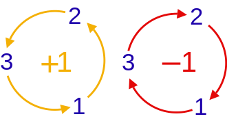

4 Commutation Relations of Observables
Prepare a spin-\(1/2\) particle with a definite \(z\) component of spin. Measure that component again, and the same result returns. Insert a measurement along \(x\), however, and the final \(z\) result becomes uncertain. What makes one measurement preserve a definite value while another disrupts it?
The answer lies in the order of operator actions. This chapter introduces the commutator, connects it to simultaneous definite values, and shows how commuting observables label quantum states. We then follow measurement paths to see when probabilities add and when amplitudes interfere, develop changes of basis, and finally relate commutators to uncertainty.
4.1 Commutators and common eigenstates
Apply \(\hat B\) first and then \(\hat A\): the resulting operator is \(\hat A\hat B\), because the rightmost operator acts first. Reversing the order gives \(\hat B\hat A\). These two actions need not agree. The commutator measures their difference:
\[ \left[ {\hat A,\hat B} \right] \equiv \hat A\hat B - \hat B\hat A \tag{4.1}\]
If \([\hat A,\hat B]=0\), the operators commute. For observables, we call them compatible. If \([\hat A,\hat B]\ne0\), the observables are incompatible. These statements concern the operators on the whole state space; a commutator may still annihilate a particular state.
Following the definition Equation 4.1 we can derive the following identities. Here \(c\) is a scalar, understood as \(c\hat I\) when it appears alongside an operator, and \(m,n\) are nonnegative integers:
\[ \left[ {\hat A,\hat B} \right] = - \left[ {\hat B,\hat A} \right], \qquad \qquad \left[ {c\hat A,\hat B} \right] = \left[ {\hat A,c\hat B} \right] = c\left[ {\hat A,\hat B} \right] \tag{4.2}\]
\[ \left[ {\hat A,\hat A} \right] = 0, \qquad \left[ {{{\hat A}^m},{{\hat A}^n}} \right] = 0, \qquad \left[ {\hat A,c} \right] = 0 \tag{4.3}\]
\[ \left[ {\hat A + \hat B,\hat C} \right] = \left[ {\hat A,\hat C} \right] + \left[ {\hat B,\hat C} \right], \qquad \qquad \left[ {\hat A,\hat B + \hat C} \right] = \left[ {\hat A,\hat B} \right] + \left[ {\hat A,\hat C} \right] \tag{4.4}\]
\[ \left[ {\hat A\hat B,\hat C} \right] = \hat A\left[ {\hat B,\hat C} \right] + \left[ {\hat A,\hat C} \right]\hat B, \qquad \qquad \left[ {\hat A,\hat B\hat C} \right] = \hat B\left[ {\hat A,\hat C} \right] + \left[ {\hat A,\hat B} \right]\hat C \tag{4.5}\]
The product identities in Equation 4.5 are especially useful: they let us break a commutator of a product into simpler pieces without changing the operator order.
4.1.1 Spin: incompatible components, compatible magnitude
Return to the two-state spin system. Multiplying the matrices of \(\hat S_n\) in Equation 3.42 gives
\[ \left[ {{{\hat S}_x},{{\hat S}_y}} \right] = i\hbar {\hat S_z},\quad \qquad \left[ {{{\hat S}_y},{{\hat S}_z}} \right] = i\hbar {\hat S_x},\quad \qquad \left[ {{{\hat S}_z},{{\hat S}_x}} \right] = i\hbar {\hat S_y} \tag{4.6}\]
These three equations are often abbreviated as
\[ \left[ {{{\hat S}_j},{{\hat S}_k}} \right] = i\hbar {\varepsilon _{jkl}}{\hat S_l} \tag{4.7}\]
Here \(\varepsilon_{jkl}\) is the Levi-Civita symbol, and a repeated index \(l\) is summed over \(1,2,3\). These indices correspond to \(x,y,z\). The diagram below is a mnemonic for the signs:

The indices \(j,k,l\) are drawn from 1, 2, and 3. An ordering \(j,k,l\) matching the left diagram gives \({\varepsilon _{jkl}} = + 1\); one matching the right gives \({\varepsilon _{jkl}} = - 1\). If any indices coincide, \({\varepsilon _{jkl}} = 0\). For example, \({\varepsilon _{312}} = {\varepsilon _{231}} = 1,\;\;{\varepsilon _{132}} = {\varepsilon _{213}} = - 1,\;\;{\varepsilon _{133}} = 0\).
Each commutator produces the third component, with a sign fixed by the cyclic order \(x\to y\to z\to x\). We will see that the same algebra holds for orbital angular momentum \(\mathbf L=\mathbf r\times\mathbf p\). It is a general feature of angular momentum, rather than a peculiarity of two-state matrices.
Although the spin components do not commute with one another, their squared magnitude can be definite together with any one component. To see this for spin \(1/2\), define
\[ \hat S_x^2\equiv\hat S_x\hat S_x,\qquad \hat S_y^2\equiv\hat S_y\hat S_y,\qquad \hat S_z^2\equiv\hat S_z\hat S_z,\qquad \mathbf{\hat S}^2\equiv\hat S_x^2+\hat S_y^2+\hat S_z^2 \tag{4.8}\]
These are the squared components and the squared magnitude of angular momentum. The matrices Equation 3.42 of \({\hat S_{x,y,z}}\) give
\[ \hat S_x^2 = \hat S_y^2 = \hat S_z^2 = \frac{{{\hbar ^2}}}{4}\left( {\begin{array}{*{20}{c}} 1&0\\ 0&1 \end{array}} \right) = \frac{{{\hbar ^2}}}{4}\hat I \tag{4.9}\]
\[ {{\bf{\hat S}}^2} \equiv \frac{3}{4}{\hbar ^2}\hat I \tag{4.10}\]
Each is a constant times the identity. Since the identity commutes with every operator on the same space, they commute with all spin components:
\[ \left[ {\hat S_n^2,{{\hat S}_{n'}}} \right] = 0, \qquad \left[ {{{{\bf{\hat S}}}^2},{{\hat S}_n}} \right] = 0 \qquad n,n' \in \{ x,y,z\} \tag{4.11}\]
From its matrix, \({{\bf{\hat S}}^2}\) has only one eigenvalue:
\[ {{\bf{S}}^2} = \frac{3}{4}{\hbar ^2} \tag{4.12}\]
A classical arrow aligned with \(z\) has no transverse components. Quantum spin behaves differently. In \(\lvert U\rangle\), \(S_z=\hbar/2\) is definite, while a measurement of either \(S_x\) or \(S_y\) yields \(\pm\hbar/2\) with equal probability. Their means vanish, but their mean squares are \(\hbar^2/4\). Thus the definite squared magnitude is \(3\hbar^2/4\), even though the largest possible component along any axis is only \(\hbar/2\). The transverse fluctuations explain why the classical-arrow picture falls short.
Because \(\mathbf{\hat S}^2\) is proportional to the identity in a two-dimensional space, its single eigenvalue is doubly degenerate. Every spin state is its eigenstate. Any orthonormal pair—\(\{\lvert U\rangle,\lvert D\rangle\}\), \(\{\lvert R\rangle,\lvert L\rangle\}\), or \(\{\lvert I\rangle,\lvert O\rangle\}\)—therefore supplies an eigenbasis for \(\mathbf{\hat S}^2\). The eigenbasis of \(\hat S_n\) is also the eigenbasis of \(\mathbf{\hat S}^2\). This gives our first concrete example of a common eigenbasis.
4.2 Common eigenstates of compatible observables
Two observables have simultaneous definite values in a state precisely when that state is an eigenstate of both. A single common eigenstate answers a question about one preparation. A complete common eigenbasis answers a stronger question: can the whole state space be described using states in which both observables are definite? The next two theorems connect that question to commutation.
Theorem 4.1. Two observables with a complete common eigenbasis commute.
Proof. Let \(\left\{ {\left\vert i \right\rangle } \right\}\) be a complete common eigenbasis of \(\hat A\) and \(\hat B\). For any basis vector \(\left\vert i \right\rangle\),
\[ \hat A\left\vert i \right\rangle = {a_i}\left\vert i \right\rangle ,\quad \hat B\left\vert i \right\rangle = {b_i}\left\vert i \right\rangle \tag{4.13}\]
Therefore,
\[ \hat A\hat B\left\vert i \right\rangle = \hat A{b_i}\left\vert i \right\rangle = {a_i}{b_i}\left\vert i \right\rangle \tag{4.14}\]
\[ \hat B\hat A\left\vert i \right\rangle = \hat B{a_i}\left\vert i \right\rangle = {a_i}{b_i}\left\vert i \right\rangle \tag{4.15}\]
Hence \(\hat A\hat B\vert i\rangle = \hat B\hat A\vert i\rangle\). Since \(\left\{ {\left\vert i \right\rangle } \right\}\) is complete, every vector can be expanded in it. For arbitrary \(\vert \psi\rangle = \sum\nolimits_i {{\psi _i}\vert i\rangle }\),
\[ \hat A\hat B\lvert\psi\rangle =\sum_i\psi_i\hat A\hat B\lvert i\rangle =\sum_i\psi_i\hat B\hat A\lvert i\rangle =\hat B\hat A\sum_i\psi_i\lvert i\rangle =\hat B\hat A\lvert\psi\rangle \tag{4.16}\]
Thus \(\hat A\hat B = \hat B\hat A\).
The contrapositive is useful: incompatible observables have no complete common eigenbasis. They may nevertheless share some eigenstates; noncommutation alone does not rule that out.
For spin \(1/2\), \(\hat S_z\) and \(\hat S_x\) (equivalently, \(\hat\sigma_z\) and \(\hat\sigma_x\)) have no common eigenstate at all. In \(\lvert U\rangle\), the \(z\) component is definite, but an \(x\) measurement gives either outcome with equal probability. Preparing a definite \(x\) component likewise leaves the \(z\) component uncertain.
This has an operational meaning. In a common eigenstate, ideal measurements of \(\hat A\) and \(\hat B\) return their respective eigenvalues and leave the state unchanged, so repeating them in either order preserves both results. The spin example at the start of the chapter fails this test.
Theorem 4.2. If \([\hat A,\hat B] = 0\) and \(\hat A\) has nondegenerate eigenvalues, every eigenstate of \(\hat A\) is also an eigenstate of \(\hat B\).
Proof. Let \(\left\{ {\left\vert {{a_j}} \right\rangle } \right\}\) be the orthonormal eigenstates of \(\hat A\):
\[ \hat A\left\vert {{a_j}} \right\rangle = {a_j}\left\vert {{a_j}} \right\rangle \tag{4.17}\]
Then
\[ \hat A\left( {\hat B\left\vert {{a_j}} \right\rangle } \right) = \hat B\left( {\hat A\left\vert {{a_j}} \right\rangle } \right) = \hat B{a_j}\left\vert {{a_j}} \right\rangle = {a_j}\left( {\hat B\left\vert {{a_j}} \right\rangle } \right) \tag{4.18}\]
Equation Equation 4.18 says that \(\hat B\lvert a_j\rangle\) remains in the eigenspace of \(\hat A\) with eigenvalue \(a_j\). Nondegeneracy forces it to be proportional to \(\lvert a_j\rangle\),
\[ \hat B\left\vert {{a_j}} \right\rangle = {b_j}\left\vert {{a_j}} \right\rangle \tag{4.19}\]
This is exactly the eigenvalue equation for \(\hat B\), so \(\lvert a_j\rangle\) is a common eigenstate. Because \(\hat B\) is Hermitian, \(b_j\) is real. We can write \(\lvert a_j\rangle\) as \(\lvert a_j,b_j\rangle\) to display both definite values:
\[ \begin{array}{l} \hat A\left\vert {{a_j},{b_j}} \right\rangle = {a_j}\left\vert {{a_j},{b_j}} \right\rangle \\ \hat B\left\vert {{a_j},{b_j}} \right\rangle = {b_j}\left\vert {{a_j},{b_j}} \right\rangle \end{array} \tag{4.20}\]
Theorem 4.2. Two Hermitian operators commute if and only if they admit a complete common eigenbasis. Nondegeneracy made the proof simple: an eigenspace contained only one independent eigenvector. What happens when an eigenvalue labels several states? Commutation makes Equation 4.18 still valid and keeps \(\hat B\) within each eigenspace of \(\hat A\), thus diagonalizing \(\hat B\) within each such subspace gives a common orthonormal eigenbasis. Thus, in finite dimensions, two Hermitian operators commute if and only if they admit a complete common eigenbasis.
4.3 Cases of common eigenstates for commuting observables
The following tables show how the eigenvalues label that basis. Read a row as a fixed value of \(A\), a column as a fixed value of \(B\), and each dot as one common basis state.
4.3.1 When either value identifies the state
In Figure 4.1, both observables have nondegenerate eigenvalues. Each row and each column contains exactly one dot.
| \(\hat{B}\) | |||||
|---|---|---|---|---|---|
| \({b}_{1}\) | \({b}_{2}\) | \({b}_{3}\) | \({b}_{4}\) | ||
| \(\hat{A}\) | \({a}_{1}\) | ● | |||
| \({a}_{2}\) | ● | ||||
| \({a}_{3}\) | ● | ||||
| \({a}_{4}\) | ● | ||||
Figure 4.1. Nondegenerate common eigenstates.
Either label \(a_j\) or \(b_j\) uniquely identifies the corresponding basis state \(\lvert a_j,b_j\rangle\).
Example: spin in a magnetic field. In the spin-only model, an electron has magnetic moment \(\mathbf{\hat\mu}=-2\mu_B\mathbf{\hat S}/\hbar\). Its energy in a nonzero magnetic field \(B_0\) along \(z\) is
\[ \hat H = - {\bf{\hat \mu }} \cdot {\bf{B}} = - {\hat \mu _z}{B_0} = 2\frac{{{\mu _B}}}{\hbar }{B_0}{\hat S_z} \tag{4.21}\]
Clearly \(\hat H\) and \({\hat S_z}\) commute. Both have nondegenerate eigenvalues, and their complete common eigenbasis is \(\left\{ {\vert U\rangle ,\vert D\rangle } \right\}\).
4.3.2 Resolving degeneracy with additional labels
With degeneracy, one measurement value identifies a subspace rather than a unique state. Figure 4.2 shows the number of independent eigenstates belonging to each eigenvalue of \(\hat A\).
| Operator | Eigenvalue | Degeneracy |
|---|---|---|
| \(\hat{A}\) | \({a}_{1}\) | ●●●● |
| \({a}_{2}\) | ●●● | |
| \({a}_{3}\) | ●●● | |
| \({a}_{4}\) | ● |
Figure 4.2. Degenerate eigenvalues.
An eigenvalue of \(\hat A\) with degeneracy \(n\) has an \(n\)-dimensional eigenspace. Choose \(n\) orthonormal states within it. If a commuting observable \(\hat B\) has distinct eigenvalues on a common eigenbasis of this subspace, measuring \(B\) distinguishes those states without losing the definite value of \(A\).
In Figure 4.3, the pair \((a_j,b_l)\) identifies one dot (state), even though neither label alone always does. For example, \(a_1\) labels four states; measuring \(B\) distinguishes them. Conversely, \(b_4\) labels three states; measuring \(A\) distinguishes them.
| \(\hat{B}\) | ||||||||
|---|---|---|---|---|---|---|---|---|
| \({b}_{1}\) | \({b}_{2}\) | \({b}_{3}\) | \({b}_{4}\) | \({b}_{5}\) | \({b}_{6}\) | \({b}_{7}\) | ||
| \(\hat{A}\) | \({a}_{1}\) | ● | ● | ● | ● | |||
| \({a}_{2}\) | ● | ● | ● | |||||
| \({a}_{3}\) | ● | ● | ● | |||||
| \({a}_{4}\) | ● | |||||||
Figure 4.3. Resolving degeneracy with a second observable.
Example: orbital angular momentum. For orbital motion, \(\mathbf{\hat L}^2\) commutes with \(\hat L_z\). Their common angular eigenstates are \(\lvert l,m\rangle\):
\[ \begin{array}{l} {{{\bf{\hat L}}}^2}\left\vert {l,m} \right\rangle = l(l + 1){\hbar ^2}\left\vert {l,m} \right\rangle , & & l = 0,1,2 \cdots \\ {{\hat L}_z}\left\vert {l,m} \right\rangle = m\hbar \left\vert {l,m} \right\rangle , & & m = - l, - l + 1, \cdots ,l & & \end{array} \tag{4.22}\]
| \(\hat L_z\): quantum number \(m\) | ||||||||
|---|---|---|---|---|---|---|---|---|
| \(\cdots\) | \(-2\) | \(-1\) | \(0\) | \(1\) | \(2\) | \(\cdots\) | ||
\(\hat L^2\) quantum number \(l\) |
\(0\) | ● | ||||||
| \(1\) | ● | ● | ● | |||||
| \(2\) | ● | ● | ● | ● | ● | |||
| \(\vdots\) | \(\cdots\) | \(\cdots\) | \(\cdots\) | \(\cdots\) | \(\cdots\) | \(\cdots\) | \(\cdots\) | |
Figure 4.4. Orbital angular-momentum quantum numbers.
For fixed \(l\), there are \(2l+1\) allowed values of \(m\). The value of \(L^2\) therefore leaves the orientation label unresolved, while \(L_z\) supplies that label.
Sometimes two labels still do not suffice. Figure 4.5 has three dots in the cell \((a_3,b_7)\): even knowing both values leaves a three-dimensional subspace. Then we need one more observable \(\hat C\), commuting with both \(\hat A\) and \(\hat B\), to distinguish those states. Continue until each allowed combination of eigenvalues identifies a unique common basis state. Such a collection is a complete set of commuting observables.
| \(\hat{B}\) | ||||||||
|---|---|---|---|---|---|---|---|---|
| \({b}_{1}\) | \({b}_{2}\) | \({b}_{3}\) | \({b}_{4}\) | \({b}_{5}\) | \({b}_{6}\) | \({b}_{7}\) | ||
| \(\hat{A}\) | \({a}_{1}\) | ● | ● | ● | ● | |||
| \({a}_{2}\) | ● | ● | ● | |||||
| \({a}_{3}\) | ●●● | |||||||
| \({a}_{4}\) | ● | |||||||
Figure 4.5. Residual degeneracy: two commuting observables need not form a complete set.
Degeneracy does not prevent a Hermitian operator from having a complete orthonormal eigenbasis; it prevents its eigenvalue alone from uniquely labeling the basis vectors. Additional commuting observables supply the missing labels. For a complete set \(\{\hat A,\hat B,\hat C,\ldots\}\), the common eigenstates \(\lvert a_j,b_l,c_u,\ldots\rangle\) satisfy orthonormality and completeness:
\[ \left\langle {{{a_i},{b_l},{c_u}{\rm{,}} \cdots }} \mathrel{\left \vert {\vphantom {{{a_i},{b_l},{c_u}{\rm{,}} \cdots } {{a_j},{b_m},{c_v}, \cdots }}} \right. \kern-1.2pt } {{{a_j},{b_m},{c_v}, \cdots }} \right\rangle = {\delta _{ij}}{\delta _{lm}}{\delta _{uv}} \cdots \tag{4.23}\]
\[ \sum\limits_i {\sum\limits_l {\sum\limits_u {\sum\limits_ \cdots {\left\vert {{a_i},{b_l},{c_u}{\rm{,}} \cdots } \right\rangle \left\langle {{a_i},{b_l},{c_u}{\rm{,}} \cdots } \right\vert } } } } = \hat I \tag{4.24}\]
Example: hydrogen bound states. Consider the bound-state subspace of hydrogen. The energy, \(\mathbf{\hat L}^2\), \(\hat L_z\) and \(\hat s_z\) commute. Their common eigenstates are \(\lvert n,l,m_l, m_s\rangle\): \(n\) sets the energy, \(l\) sets the squared orbital angular momentum, \(m_l\) sets its \(z\) component and \(m_s\) sets the \(z\) component of the electron spin. An energy value alone generally leaves several states possible; all four labels together identify one bound eigenstate. Superpositions of these states describe any state within the bound-state subspace. (A complete description of arbitrary states also requires the continuum of unbound states.)
4.3.3 Independent degrees of freedom
There is another way of observables commute: they act on different factors of a tensor-product state space. Examples include a orbital observable and a spin observable of one electron, or the spin observables of different electrons. In each case, the observables commute because they are belong to different state spaces.
Every eigenvalue of one can then be paired with every eigenvalue of the other, as the full grid in Figure 4.6 shows.
| \(\hat{B}\) | ||||||||
|---|---|---|---|---|---|---|---|---|
| \({b}_{1}\) | \({b}_{2}\) | \({b}_{3}\) | \({b}_{4}\) | \({b}_{5}\) | \({b}_{6}\) | \({b}_{7}\) | ||
| \(\hat{A}\) | \({a}_{1}\) | ● | ● | ● | ● | ● | ● | ● |
| \({a}_{2}\) | ● | ● | ● | ● | ● | ● | ● | |
| \({a}_{3}\) | ● | ● | ● | ● | ● | ● | ● | |
| \({a}_{4}\) | ● | ● | ● | ● | ● | ● | ● | |
Figure 4.6. Observables on independent vector spaces.
On the combined space, the operators are \(\hat A\otimes\hat I_B\) and \(\hat I_A\otimes\hat B\), where \(\hat I_A\) and \(\hat I_B\) are the identity operator in the state space of \(\hat A\) and \(\hat B\), respectively. Their product eigenstates are \(\lvert a_j\rangle\otimes\lvert b_l\rangle\), abbreviated \(\lvert a_j\rangle\lvert b_l\rangle\) or \(\lvert a_j,b_l\rangle\). The dimension of the combined space is the product of the two dimensions.
Suppressing the identity factors, we can see the independent actions directly:
\[ \hat A\hat B\left\vert {{a_1}} \right\rangle \left\vert {{b_1}} \right\rangle = \left( {\hat A\left\vert {{a_1}} \right\rangle } \right)\left( {\hat B\left\vert {{b_1}} \right\rangle } \right) = {a_1}{b_1}\left\vert {{a_1}} \right\rangle \left\vert {{b_1}} \right\rangle \tag{4.25}\]
4.4 Measurement paths and interference
We have seen how an incompatible measurement can change later outcomes. Now consider a subtler question: what if an intermediate device offers several paths, and we allow them all to reach the final apparatus? The answer depends on whether the paths leave distinguishable records.
For a selected sequence of ideal measurement outcomes, conditional probabilities multiply. For coherent alternatives that reach the same final outcome without a path record, probability amplitudes add before we take the squared magnitude. The spin experiments let us compare these two situations explicitly.
4.4.1 A selected intermediate outcome
\[ \boxed{\hat A}\xrightarrow{\lvert a\prime\rangle}\boxed{\hat B}\xrightarrow{\lvert b\prime\rangle}\boxed{\hat A}\xrightarrow{\lvert a\prime\prime\rangle} \tag{4.26}\]
Figure 4.7. A selected sequence of measurement outcomes; other channels are blocked.
Let \(\hat A\) and \(\hat B\) be incompatible observables with complete, nondegenerate eigenbases. The first measurement prepares \(\lvert a'\rangle\). Selecting the intermediate outcome \(b'\) then has probability \(\lvert\langle b'\vert a'\rangle\rvert^2\) and prepares \(\lvert b'\rangle\). The final outcome \(a''\) has conditional probability \(\lvert\langle a''\vert b'\rangle\rvert^2\). Given the initial preparation, the probability of this selected sequence is therefore
\[ {\left\vert {\left\langle {{b'}} \mathrel{\left \vert {\vphantom {{b'} {a'}}} \right. \kern-1.2pt } {{a'}} \right\rangle } \right\vert ^2} \times {\left\vert {\left\langle {{a''}} \mathrel{\left \vert {\vphantom {{a''} {b'}}} \right. \kern-1.2pt } {{b'}} \right\rangle } \right\vert ^2} \tag{4.27}\]
\[ \boxed{\hat A}\xrightarrow{\lvert a\prime\rangle}\boxed{\hat B}\xrightarrow{\text{all channels open}}\boxed{\hat A}\xrightarrow{\lvert a\prime\prime\rangle} \tag{4.28}\]
Figure 4.8. All intermediate channels are open.
4.4.2 Open channels: recorded or coherently recombined?
Figure 4.8 leaves all intermediate channels open, but that alone does not specify the final probability. First suppose \(\hat B\) is actually measured, or a distinguishable record of its outcome is retained by a detector or the environment. Even if we ignore that record, the alternatives form a statistical mixture. The final probability is the sum of the probabilities for the separate sequences:
\[ \sum\limits_{b'} {{{\left\vert {\left\langle {{b'}} \mathrel{\left \vert {\vphantom {{b'} {a'}}} \right. \kern-1.2pt } {{a'}} \right\rangle } \right\vert }^2}{{\left\vert {\left\langle {{a''}} \mathrel{\left \vert {\vphantom {{a''} {b'}}} \right. \kern-1.2pt } {{b'}} \right\rangle } \right\vert }^2}} = \sum\limits_{b'} {\left\langle {{a'}} \mathrel{\left \vert {\vphantom {{a'} {b'}}} \right. \kern-1.2pt } {{b'}} \right\rangle \left\langle {{b'}} \mathrel{\left \vert {\vphantom {{b'} {a'}}} \right. \kern-1.2pt } {{a'}} \right\rangle \left\langle {{a''}} \mathrel{\left \vert {\vphantom {{a''} {b'}}} \right. \kern-1.2pt } {{b'}} \right\rangle \left\langle {{b'}} \mathrel{\left \vert {\vphantom {{b'} {a''}}} \right. \kern-1.2pt } {{a''}} \right\rangle } \tag{4.29}\]
Now consider a different arrangement: the intermediate device separates the \(B\) channels, then recombines them coherently, preserving their relative phases and leaving no distinguishable path record. In the ideal arrangement considered here, separation and recombination introduce no net relative phase or other change of state.
For a single path, the amplitude is the product of its step amplitudes. For indistinguishable alternatives, we sum these products and then square the magnitude. Complex phases survive that sum and allow interference.
The total amplitude for Figure 4.7 is \(\left\langle {{b'}} \mathrel{\left \vert {\vphantom {{b'} {a'}}} \right. \kern-1.2pt } {{a'}} \right\rangle \left\langle {{a''}} \mathrel{\left \vert {\vphantom {{a''} {b'}}} \right. \kern-1.2pt } {{b'}} \right\rangle\), so its probability is
\[ {\left\vert {\left\langle {{b'}} \mathrel{\left \vert {\vphantom {{b'} {a'}}} \right. \kern-1.2pt } {{a'}} \right\rangle \left\langle {{a''}} \mathrel{\left \vert {\vphantom {{a''} {b'}}} \right. \kern-1.2pt } {{b'}} \right\rangle } \right\vert ^2} = {\left\vert {\left\langle {{b'}} \mathrel{\left \vert {\vphantom {{b'} {a'}}} \right. \kern-1.2pt } {{a'}} \right\rangle } \right\vert ^2} \times {\left\vert {\left\langle {{a''}} \mathrel{\left \vert {\vphantom {{a''} {b'}}} \right. \kern-1.2pt } {{b'}} \right\rangle } \right\vert ^2} \tag{4.30}\]
For one selected path, this reproduces Equation 4.27. For the coherently recombined arrangement in Figure 4.8, we instead sum over the intermediate paths. Completeness of the \(B\) basis, \(\sum_{b'}\lvert b'\rangle\langle b'\rvert=\hat I\), gives
\[ \sum\limits_{b'} {\left\langle {{b'}} \mathrel{\left \vert {\vphantom {{b'} {a'}}} \right. \kern-1.2pt } {{a'}} \right\rangle \left\langle {{a''}} \mathrel{\left \vert {\vphantom {{a''} {b'}}} \right. \kern-1.2pt } {{b'}} \right\rangle } = \sum\limits_{b'} {\left\langle {{a''}} \mathrel{\left \vert {\vphantom {{a''} {b'}}} \right. \kern-1.2pt } {{b'}} \right\rangle \left\langle {{b'}} \mathrel{\left \vert {\vphantom {{b'} {a'}}} \right. \kern-1.2pt } {{a'}} \right\rangle } = \left\langle {{a''}} \mathrel{\left \vert {\vphantom {{a''} {a'}}} \right. \kern-1.2pt } {{a'}} \right\rangle \tag{4.31}\]
The probability is therefore \(\lvert\langle a''\vert a'\rangle\rvert^2\), just as if the intermediate apparatus were absent. This result depends on coherent recombination; an unread intermediate measurement gives the probability sum in Equation 4.29 instead.
4.4.3 Spin paths that cancel
Interpret the final experiment in Figure 1.2 as this ideal coherent arrangement. A particle prepared in \(\lvert U\rangle\) travels through the \(R\) and \(L\) channels of a \(\hat\sigma_x\) device, which are recombined before the final \(\hat\sigma_z\) measurement. No distinguishable path record remains. The probability of returning to \(\lvert U\rangle\) is
\[ {\left\vert {\left\langle {U} \mathrel{\left \vert {\vphantom {U U}} \right. \kern-1.2pt } {U} \right\rangle } \right\vert ^2} = 1 \tag{4.32}\]
Similarly, the probability of \(\left\vert D \right\rangle\) is
\[ {\left\vert {\left\langle {D} \mathrel{\left \vert {\vphantom {D U}} \right. \kern-1.2pt } {U} \right\rangle } \right\vert ^2} = 0 \tag{4.33}\]
These results also follow by evaluating each path amplitude. For example, the probability of final state \(\left\vert D \right\rangle\) is
\[ {\left\vert {\left\langle {R} \mathrel{\left \vert {\vphantom {R U}} \right. \kern-1.2pt } {U} \right\rangle \left\langle {D} \mathrel{\left \vert {\vphantom {D R}} \right. \kern-1.2pt } {R} \right\rangle + \left\langle {L} \mathrel{\left \vert {\vphantom {L U}} \right. \kern-1.2pt } {U} \right\rangle \left\langle {D} \mathrel{\left \vert {\vphantom {D L}} \right. \kern-1.2pt } {L} \right\rangle } \right\vert ^2} = {\left\vert {\frac{1}{{\sqrt 2 }}\frac{1}{{\sqrt 2 }} + \left( { - \frac{1}{{\sqrt 2 }}} \right)\frac{1}{{\sqrt 2 }}} \right\vert ^2} = 0 \tag{4.34}\]
Each path contributes a nonzero amplitude to \(\lvert D\rangle\), but the two contributions have opposite signs. Their sum vanishes: destructive interference removes the \(D\) outcome. If the intermediate \(x\) outcome were recorded instead, each path would contribute a probability of \(1/4\), so the final probabilities would be \(P(D)=P(U)=1/2\). The relative sign matters only when the amplitudes can interfere.
In classical optics, intensity at a screen point is proportional to the squared magnitude of the sum of electric fields arriving by different paths. Their relative phases produce constructive or destructive interference. The analogous relation between quantum probabilities and amplitudes motivates the description of quantum behavior as wave behavior.
The deciding question is whether a distinguishable path record remains, rather than whether anyone reads it. A detector or the environment can retain such a record and suppress interference through decoherence. Conversely, a microscopic particle can also lose coherence, and suitably isolated larger systems can display interference. Throughout, the same quantum rules apply: add probabilities for alternatives with distinguishable records, and add amplitudes for coherent alternatives.
4.5 Changing representations
The path amplitudes above are overlaps between two bases. Those same overlaps tell us how to rewrite a state in another representation. Chapter 3 used the \(\hat\sigma_z\) eigenbasis \(\{\lvert U\rangle,\lvert D\rangle\}\); we could equally use the \(\hat\sigma_x\) eigenbasis \(\{\lvert R\rangle,\lvert L\rangle\}\). The physical state stays the same, while its components in the chosen basis change—much as a spatial vector has different components along rotated Cartesian axes.
4.5.1 Transformation rules
Let \(\{\lvert a_i\rangle\}\) and \(\{\lvert b_i\rangle\}\) be two complete orthonormal bases of the same space. They may be eigenbases of incompatible observables, but the transformation rules do not require incompatibility. Fix an ordering for each basis and define an operator that maps corresponding basis vectors:
\[ \hat U\left\vert {{a_j}} \right\rangle = \left\vert {{b_j}} \right\rangle \tag{4.35}\]
The outer-product expression makes this mapping explicit: when it acts on \(\lvert a_j\rangle\), orthonormality selects the term with \(i=j\).
\[ \hat U = \sum\limits_i {\left\vert {{b_i}} \right\rangle \left\langle {{a_i}} \right\vert } \tag{4.36}\]
By Equation 2.39,
\[ {\hat U^\dagger } = \sum\limits_i {\left\vert {{a_i}} \right\rangle } \left\langle {{b_i}} \right\vert \tag{4.37}\]
Acting on \(\lvert b_j\rangle\) shows that the adjoint reverses the mapping:
\[ {\hat U^\dagger }\left\vert {{b_j}} \right\rangle = \left\vert {{a_j}} \right\rangle \tag{4.38}\]
Thus \({\hat U^\dagger }\) transforms the representation \(\hat B \to \hat A\). Combining Equation 4.36 and Equation 4.37 gives
\[ \hat U{\hat U^\dagger } = {\hat U^\dagger }\hat U = \hat I \tag{4.39}\]
Thus \(\hat U\) is unitary, with \(\hat U^{-1}=\hat U^\dagger\). Unitary transformations preserve inner products and norms. This is exactly what a change of orthonormal basis must do: probabilities cannot depend on which basis we use to calculate them.
Keep two operations distinct. The operator \(\hat U\) maps basis kets to new basis kets. Re-expressing the same physical state in the new basis will require the inverse matrix. We derive that rule below.
The matrix elements of transformation operator \(\hat U\) in the \(\hat A\) representation are
\[ \langle {{a_l}}\vert {\hat U}\vert {{a_m}}\rangle = \sum\limits_i {\left\langle {{a_l}} \right.\left\vert {{b_i}} \right\rangle \left\langle {{a_i}} \right\vert } \left. {{a_m}} \right\rangle = \sum\limits_i {\left\langle {{a_l}} \right.\left\vert {{b_i}} \right\rangle {\delta _{im}}} = \left\langle {{a_l}} \right.\left\vert {{b_m}} \right\rangle \tag{4.40}\]
The elements of \(\hat U\) in the \(\hat B\) representation are
\[ \langle b_l\vert\hat U\vert b_m\rangle =\sum_i\langle b_l\vert b_i\rangle\langle a_i\vert b_m\rangle =\sum_i\delta_{li}\langle a_i\vert b_m\rangle =\langle a_l\vert b_m\rangle \tag{4.41}\]
With the corresponding ordering, this particular mapping operator has the same matrix in the two chosen bases. Its columns are the new basis vectors expressed in the old basis:
\[ \hat U \buildrel\textstyle.\over= \left( {\begin{array}{*{20}{c}} {\left\langle {{{a_1}}} \mathrel{\left \vert {\vphantom {{{a_1}} {{b_1}}}} \right. \kern-1.2pt } {{{b_1}}} \right\rangle }&{\left\langle {{{a_1}}} \mathrel{\left \vert {\vphantom {{{a_1}} {{b_2}}}} \right. \kern-1.2pt } {{{b_2}}} \right\rangle }& \cdots \\ {\left\langle {{{a_2}}} \mathrel{\left \vert {\vphantom {{{a_2}} {{b_1}}}} \right. \kern-1.2pt } {{{b_1}}} \right\rangle }&{\left\langle {{{a_2}}} \mathrel{\left \vert {\vphantom {{{a_2}} {{b_2}}}} \right. \kern-1.2pt } {{{b_2}}} \right\rangle }& \cdots \\ \vdots & \vdots & \ddots \end{array}} \right) \tag{4.42}\]
Likewise, the inverse \({\hat U^\dagger }\) has the same matrix in both:
\[ \hat U_{ij}^\dagger = {\left( {{{\hat U}_{ji}}} \right)^*} = \left\langle {{{b_i}}} \mathrel{\left \vert {\vphantom {{{b_i}} {{a_j}}}} \right. \kern-1.2pt } {{{a_j}}} \right\rangle \tag{4.43}\]
To express a state vector in the new basis, insert the identity \(\sum_j\lvert a_j\rangle\langle a_j\rvert\) into \(\langle b_i\vert\psi\rangle\). This expresses each new component as a sum of old components weighted by basis overlaps:
\[ \left\langle {{{b_i}}} \mathrel{\left \vert {\vphantom {{{b_i}} \psi }} \right. \kern-1.2pt } {\psi } \right\rangle = \sum\limits_j {\left\langle {{{b_i}}} \mathrel{\left \vert {\vphantom {{{b_i}} {{a_j}}}} \right. \kern-1.2pt } {{{a_j}}} \right\rangle } \left\langle {{{a_j}}} \mathrel{\left \vert {\vphantom {{{a_j}} \psi }} \right. \kern-1.2pt } {\psi } \right\rangle = \sum\limits_j {\left\langle {{a_i}} \right\vert {{\hat U}^\dagger }\left\vert {{a_j}} \right\rangle } \left\langle {{{a_j}}} \mathrel{\left \vert {\vphantom {{{a_j}} \psi }} \right. \kern-1.2pt } {\psi } \right\rangle \tag{4.44}\]
Therefore,
\[ \left( \begin{array}{c} \left\langle {{{b_1}}} \mathrel{\left \vert {\vphantom {{{b_1}} \psi }} \right. \kern-1.2pt } {\psi } \right\rangle \\ \left\langle {{{b_2}}} \mathrel{\left \vert {\vphantom {{{b_2}} \psi }} \right. \kern-1.2pt } {\psi } \right\rangle \\ \vdots \end{array} \right) = \left( {\begin{array}{*{20}{c}} {\left\langle {{{b_1}}} \mathrel{\left \vert {\vphantom {{{b_1}} {{a_1}}}} \right. \kern-1.2pt } {{{a_1}}} \right\rangle }&{\left\langle {{{b_1}}} \mathrel{\left \vert {\vphantom {{{b_1}} {{a_2}}}} \right. \kern-1.2pt } {{{a_2}}} \right\rangle }& \cdots \\ {\left\langle {{{b_2}}} \mathrel{\left \vert {\vphantom {{{b_2}} {{a_1}}}} \right. \kern-1.2pt } {{{a_1}}} \right\rangle }&{\left\langle {{{b_2}}} \mathrel{\left \vert {\vphantom {{{b_2}} {{a_2}}}} \right. \kern-1.2pt } {{{a_2}}} \right\rangle }& \cdots \\ \vdots & \vdots & \ddots \end{array}} \right)\left( \begin{array}{c} \left\langle {{{a_1}}} \mathrel{\left \vert {\vphantom {{{a_1}} \psi }} \right. \kern-1.2pt } {\psi } \right\rangle \\ \left\langle {{{a_2}}} \mathrel{\left \vert {\vphantom {{{a_2}} \psi }} \right. \kern-1.2pt } {\psi } \right\rangle \\ \vdots \end{array} \right) \tag{4.45}\]
The left-hand column contains the components of \(\lvert\psi\rangle\) in the \(B\) basis. The right-hand column contains its components in the \(A\) basis, multiplied by the overlap matrix with elements \(\langle b_i\vert a_j\rangle\). That matrix is \(\hat U^\dagger\), so
\[ {\left\vert \psi \right\rangle _B} = {\hat U^\dagger }{\left\vert \psi \right\rangle _A} \tag{4.46}\]
For an operator, the corresponding transformation is
\[ \begin{array}{c} \left\langle {{b_i}} \right\vert \hat X\left\vert {{b_j}} \right\rangle = \sum\limits_{l,m} {\left\langle {{{b_i}}} \mathrel{\left \vert {\vphantom {{{b_i}} {{a_l}}}} \right. \kern-1.2pt } {{{a_l}}} \right\rangle } \left\langle {{a_l}} \right\vert \hat X\left\vert {{a_m}} \right\rangle \left\langle {{{a_m}}} \mathrel{\left \vert {\vphantom {{{a_m}} {{b_j}}}} \right. \kern-1.2pt } {{{b_j}}} \right\rangle \\ = \sum\limits_{l,m} {\left\langle {{a_i}} \right\vert {{\hat U}^\dagger }\left\vert {{a_l}} \right\rangle } \left\langle {{a_l}} \right\vert \hat X\left\vert {{a_m}} \right\rangle \left\langle {{a_m}} \right\vert \hat U\left\vert {{a_j}} \right\rangle \end{array} \tag{4.47}\]
The left side is the matrix of \(\hat X\) in the \(\hat B\) representation; the three factors on the right are the matrices of \({\hat U^\dagger },\hat X,\hat U\) in the \(\hat A\) representation. Hence
\[ {\hat X_B} = {\hat U^\dagger }{\hat X_A}\hat U \tag{4.48}\]
Here the subscripts identify the bases used for the state-vector columns and operator matrices. The rule \(\hat X_B=\hat U^\dagger\hat X_A\hat U\) is a unitary similarity transformation: the factor on the right expresses the input state vector in the \(A\) basis, \(\hat X_A\) acts, and the factor on the left expresses the result in the \(B\) basis.
Example: view spin from the \(x\) basis. Find the matrices of \(\hat\sigma_x\), \(\hat\sigma_y\), and \(\hat\sigma_z\) in the \(\hat\sigma_x\) eigenbasis. We expect \(\hat\sigma_x\) to become diagonal, because the basis states have definite \(x\) spin.
The \({\hat \sigma _z}\) basis is \(\left\vert U \right\rangle ,\left\vert D \right\rangle\), and the \({\hat \sigma _x}\) basis is \(\left\vert R \right\rangle ,\left\vert L \right\rangle\). By Equation 4.42, the matrix of \(\hat U\) for the change \({\hat \sigma _z} \to {\hat \sigma _x}\) is
\[ \hat U \buildrel\textstyle.\over= \left( {\begin{array}{*{20}{c}} {\left\langle {U} \mathrel{\left \vert {\vphantom {U R}} \right. \kern-1.2pt } {R} \right\rangle }&{\left\langle {U} \mathrel{\left \vert {\vphantom {U L}} \right. \kern-1.2pt } {L} \right\rangle }\\ {\left\langle {D} \mathrel{\left \vert {\vphantom {D R}} \right. \kern-1.2pt } {R} \right\rangle }&{\left\langle {D} \mathrel{\left \vert {\vphantom {D L}} \right. \kern-1.2pt } {L} \right\rangle } \end{array}} \right) = \frac{1}{{\sqrt 2 }}\left( {\begin{array}{*{20}{c}} 1&1\\ 1&{ - 1} \end{array}} \right) \tag{4.49}\]
By Equation 4.43, its inverse \({\hat U^\dagger }\) has matrix
\[ {\hat U^\dagger } \buildrel\textstyle.\over= \frac{1}{{\sqrt 2 }}\left( {\begin{array}{*{20}{c}} 1&1\\ 1&{ - 1} \end{array}} \right) \tag{4.50}\]
Using Equation 4.48, in the \({\hat \sigma _x}\) representation we obtain
\[ \begin{array}{l} {{\hat \sigma }_x} \buildrel\textstyle.\over= \frac{1}{{\sqrt 2 }}\left( {\begin{array}{*{20}{c}} 1&1\\ 1&{ - 1} \end{array}} \right)\left( {\begin{array}{*{20}{c}} 0&1\\ 1&0 \end{array}} \right)\frac{1}{{\sqrt 2 }}\left( {\begin{array}{*{20}{c}} 1&1\\ 1&{ - 1} \end{array}} \right) = \left( {\begin{array}{*{20}{c}} 1&0\\ 0&{ - 1} \end{array}} \right)\\ {{\hat \sigma }_y} \buildrel\textstyle.\over= \frac{1}{{\sqrt 2 }}\left( {\begin{array}{*{20}{c}} 1&1\\ 1&{ - 1} \end{array}} \right)\left( {\begin{array}{*{20}{c}} 0&{ - i}\\ i&0 \end{array}} \right)\frac{1}{{\sqrt 2 }}\left( {\begin{array}{*{20}{c}} 1&1\\ 1&{ - 1} \end{array}} \right) = \left( {\begin{array}{*{20}{c}} 0&i\\ { - i}&0 \end{array}} \right)\\ {{\hat \sigma }_z} \buildrel\textstyle.\over= \frac{1}{{\sqrt 2 }}\left( {\begin{array}{*{20}{c}} 1&1\\ 1&{ - 1} \end{array}} \right)\left( {\begin{array}{*{20}{c}} 1&0\\ 0&{ - 1} \end{array}} \right)\frac{1}{{\sqrt 2 }}\left( {\begin{array}{*{20}{c}} 1&1\\ 1&{ - 1} \end{array}} \right) = \left( {\begin{array}{*{20}{c}} 0&1\\ 1&0 \end{array}} \right) \end{array} \tag{4.51}\]
Theorem 4.3. An observable’s matrix has the same trace—the sum of diagonal elements—in every representation. It equals the sum of all eigenvalues, counting an eigenvalue of degeneracy \(n\) exactly \(n\) times.
\[ \sum\limits_i {\left\langle {{b_i}} \right\vert \hat X\left\vert {{b_i}} \right\rangle } = \sum\limits_j {\left\langle {{a_j}} \right\vert \hat X\left\vert {{a_j}} \right\rangle } \tag{4.52}\]
Proof. Use Equation 4.48 and the trace identity \({\rm{Tr}}\left( {AB} \right) = {\rm{Tr}}\left( {BA} \right)\).
\[ {\text{Tr}}\left( {{{\hat X}_B}} \right) = {\text{Tr}}\;\left( {{{\hat U}^\dagger }{{\hat X}_A}\hat U} \right) = {\text{Tr}}\;\left( {\hat U{{\hat U}^\dagger }{{\hat X}_A}} \right) = {\text{Tr}}\left( {{{\hat X}_A}} \right) \tag{4.53}\]
The trace is therefore independent of the basis. In an observable’s eigenbasis, its matrix is diagonal (Equation 2.56), so the trace is simply the eigenvalue sum, with repeated eigenvalues counted according to their degeneracy. A basis change rearranges the matrix elements while preserving this sum.
4.5.2 Eigenvalue equations and changes of basis
Suppose the matrix of \(\hat B\) is given in the \(A\) basis. Solve its eigenvalue equation there. Taking the overlap with \(\langle a_l\rvert\) gives
\[ \sum_i\langle a_l\vert\hat B\vert a_i\rangle \langle a_i\vert b_m\rangle =b_m\langle a_l\vert b_m\rangle \tag{4.54}\] \(m\)th normalized eigenvector has components \(\langle a_i\vert b_m\rangle\)—exactly column \(m\) of \(\hat U\). Arrange an orthonormal set of these eigenvectors as columns. The resulting matrix is the \(\hat U\) that transforms \(\hat B_A\) to \(\hat U^\dagger\hat B_A\hat U=\hat B_B\), a diagonal matrix containing the eigenvalues \(b_m\). This is diagonalization.
If an eigenvalue is degenerate, choose an orthonormal basis within its eigenspace; the choice is not unique.
4.5.3 Summary of changes of representation
For quick reference, fix the convention \(\hat U\lvert a_j\rangle=\lvert b_j\rangle\). Its matrix columns are the new basis kets in the old basis, \(U_{ij}=\langle a_i\vert b_j\rangle\). Then:
Reverse the basis mapping: \(\lvert a_j\rangle=\hat U^\dagger\lvert b_j\rangle\).
Unitarity: \(\hat U\hat U^\dagger=\hat U^\dagger\hat U=\hat I\).
State vector in the new basis: \(\lvert\psi\rangle_B=\hat U^\dagger\lvert\psi\rangle_A\).
Operator matrices: \(\hat X_B=\hat U^\dagger\hat X_A\hat U\).
For the mapping operator defined here, its matrices in these two specifically paired bases agree, as do those of its adjoint. This does not mean that either matrix is the same in every possible representation:
\[ \begin{array}{l} \langle {{a_l}}\vert {\hat U}\vert {{a_m}}\rangle = \langle {{b_l}}\vert {\hat U}\vert {{b_m}}\rangle = \langle {{a_l}}\vert {{b_m}}\rangle \\ \langle {{a_l}}\vert {{{\hat U}^\dagger }}\vert {{a_m}}\rangle = \langle {{b_l}}\vert {{\hat U}^\dagger }\vert {{b_m}}\rangle = \langle {b_l}\vert {{a_m}}\rangle \end{array} \tag{4.55}\]
4.6 * The Heisenberg uncertainty principle
Compatibility tells us when a common eigenbasis exists. Uncertainty quantifies the spread of outcomes in a particular state. A definite value has zero spread; a superposition of different eigenvalues generally does not. The commutator connects these two ideas.
For a normalized state \(\lvert\psi\rangle\), all expectation values in this section refer to that same preparation. Define the deviation operators \(\Delta\hat A=\hat A-\langle\hat A\rangle\hat I\) and \(\Delta\hat B=\hat B-\langle\hat B\rangle\hat I\). They subtract the mean from each observable.
The variance is \(\langle(\Delta\hat A)^2\rangle=\langle\hat A^2\rangle-\langle\hat A\rangle^2\). Its square root, \(\Delta A\), is the standard deviation of the measurement outcomes. Distinguish the number \(\Delta A\) from the operator \(\Delta\hat A\).
We will prove the Robertson uncertainty relation, often called the generalized Heisenberg uncertainty relation: \(\Delta A\,\Delta B\ge\tfrac12\lvert\langle[\hat A,\hat B]\rangle\rvert\). The proof has three ingredients: subtract the means, apply the Schwarz inequality, and split the operator product into its symmetric and antisymmetric parts.
Proof. In addition to the commutator, define the anticommutator \(\{\hat X,\hat Y\}=\hat X\hat Y+\hat Y\hat X\). Any product separates into these two parts:
\[ \hat X\hat Y = \frac{1}{2}[\hat X,\hat Y] + \frac{1}{2}{\rm{\{ }}\hat X,\hat Y{\rm{\} }} \tag{4.56}\]
Let \(\hat A,\hat B\) be Hermitian operators.
Taking adjoints reverses the order of a product. For Hermitian \(\hat A\) and \(\hat B\), this gives \([\hat A,\hat B]^\dagger=-[\hat A,\hat B]\) and \(\{\hat A,\hat B\}^\dagger=\{\hat A,\hat B\}\).
Consequently,
\[ \langle [\hat A,\hat B]\rangle \text{ is purely imaginary}, \qquad \langle \{ \hat A,\hat B\} \rangle \text{ is real} \tag{4.57}\]
Also,
\[ \langle [\Delta \hat A,\Delta \hat B]\rangle = \langle [\hat A,\hat B]\rangle , \qquad \langle \{ \Delta \hat A,\Delta \hat B\} \rangle = \langle \{ \hat A,\hat B\} \rangle - 2\langle {\hat A}\rangle \langle {\hat B}\rangle \tag{4.58}\]
Combining these gives
\[ \langle [\Delta \hat A,\Delta \hat B]\rangle = \langle [\hat A,\hat B]\rangle \;\text{ is purely imaginary}, \qquad \langle \{ \Delta \hat A,\Delta \hat B\} \rangle \;\text{ is real} \tag{4.59}\]
Substitute \(\hat X = \Delta \hat A,\;\hat Y = \Delta \hat B\) into Equation 4.56 and take expectation values:
\[ \langle {\Delta \hat A\Delta \hat B}\rangle = \frac{1}{2}\langle {[\Delta \hat A,\Delta \hat B]}\rangle + \frac{1}{2}\langle {{\rm{\{ }}\Delta \hat A,\Delta \hat B{\rm{\} }}}\rangle \tag{4.60}\]
The Schwarz inequality states that for any states \(\vert \alpha \rangle ,\;\vert \beta \rangle\),
\[ \langle \alpha \vert \alpha \rangle \langle \beta \vert \beta \rangle \ge {\left\vert {\langle \alpha \vert \beta \rangle } \right\vert ^2} \tag{4.61}\]
Apply the Schwarz inequality to \(\lvert\alpha\rangle=\Delta\hat A\lvert\psi\rangle\) and \(\lvert\beta\rangle=\Delta\hat B\lvert\psi\rangle\). Their squared norms are the two variances. Their overlap is \(\langle\Delta\hat A\Delta\hat B\rangle\), whose real and imaginary parts come from the anticommutator and commutator respectively. Thus
\[ \langle {{{(\Delta \hat A)}^2}}\rangle \langle {{{(\Delta \hat B)}^2}}\rangle \ge {\left\vert {\langle {\Delta \hat A\Delta \hat B}\rangle } \right\vert ^2} = {\left( {\frac{1}{{2i}}\langle [\hat A,\hat B]\rangle } \right)^2} + {\left( {\frac{1}{2}\langle \{ \Delta \hat A,\Delta \hat B\} \rangle } \right)^2} \tag{4.62}\]
The second term on the right of Equation 4.62 is a real square and is nonnegative. Hence
\[ \langle {{{(\Delta \hat A)}^2}}\rangle \langle {{{(\Delta \hat B)}^2}}\rangle \ge \frac{1}{4}{\left( {i\langle [\hat A,\hat B]\rangle } \right)^2} \tag{4.63}\]
Define the standard deviation \(\Delta A \equiv \sqrt {\langle {{{(\Delta \hat A)}^2}}\rangle }\) and take square roots to obtain the familiar uncertainty relation:
\[ \Delta A\Delta B \ge \frac{1}{2}\left\vert {\langle [\hat A,\hat B]\rangle } \right\vert \tag{4.64}\]
The relation describes statistical spreads in identically prepared systems. Determine \(\Delta A\) from repeated measurements of \(A\) on one ensemble and \(\Delta B\) from measurements of \(B\) on another ensemble with the same preparation. It does not, by itself, specify the disturbance caused by a sequential measurement.
For position and momentum, \([\hat x,\hat p_x]=i\hbar\hat I\) gives \(\Delta x\,\Delta p_x\ge\hbar/2\). For spin, \([\hat S_x,\hat S_y]=i\hbar\hat S_z\) gives \(\Delta S_x\,\Delta S_y\ge(\hbar/2)\lvert\langle\hat S_z\rangle\rvert\). In \(\lvert U\rangle\), both transverse standard deviations are \(\hbar/2\), and the inequality is saturated. Notice that the spin bound depends on the state: noncommuting observables can have a zero lower bound in a state where the commutator’s expectation vanishes.
Time is a parameter in this formulation, so an energy–time relation cannot be obtained simply by substituting a time operator into the result above. One precise version uses the time scale \(\tau_A=\Delta A/\lvert d\langle\hat A\rangle/dt\rvert\) for the mean of an observable with no explicit time dependence to change by one standard deviation. For unitary evolution with a time-independent Hamiltonian and a nonzero rate of change, the uncertainty relation and the equation of motion give \(\Delta E\,\tau_A\ge\hbar/2\). Here \(\tau_A\) is a dynamical time scale; the time-evolution chapter supplies the equation of motion.
4.7 Exercises
4.1. Define \({\rm{\{ }}\hat A,\hat B{\rm{\} }} \equiv \hat A\hat B + \hat B\hat A\). Prove \[ \hat A\hat B = \frac{1}{2}\left[ {\hat A,\hat B} \right] + \frac{1}{2}\left\{ {\hat A,\hat B} \right\} \].
4.2. Eigenstates \(\vert {a_i}\rangle ,\vert {a_j}\rangle\) of \(\hat A\) have distinct eigenvalues \({a_i},{a_j}\). If \([\hat A,\hat B] = 0\), prove
\[ \langle {{a_i}}\vert {\hat B}\vert {{a_j}}\rangle = 0 \tag{4.65}\]
4.3. Using Equation 4.5 and Equation 4.6, prove the first relation below for angular momentum of any spin. For the second, specialize to the spin-\(1/2\) matrices in Equation 3.42:
\[ \left[ {{{{\bf{\hat S}}}^2},{{\hat S}_z}} \right] = 0, \qquad \left[ {\hat S_x^2,\hat S_y^2} \right] = 0 \tag{4.66}\]
4.4. Prove that the mean of an anti-Hermitian operator, \({\hat C^\dagger } = - \hat C\), is purely imaginary.
4.5. Express \(\lvert R\rangle\) and \(\lvert L\rangle\) as column vectors, and \(\hat\sigma_x\) as a matrix, in the \(\hat\sigma_y\) eigenbasis.
4.6*. Let \(\langle\hat X\rangle\) denote the expectation value in a normalized state, and define \(\Delta\hat X=\hat X-\langle\hat X\rangle\hat I\). For Hermitian \(\hat A\) and \(\hat B\), prove:
\(\langle {[\hat A,\hat B]}\rangle\) is purely imaginary.
\(\langle {{\rm{\{ }}\Delta \hat A,\Delta \hat B{\rm{\} }}}\rangle\) is real.